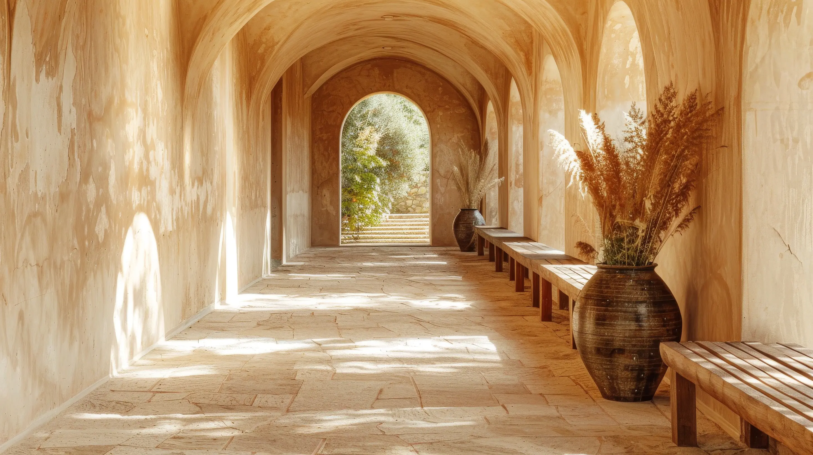
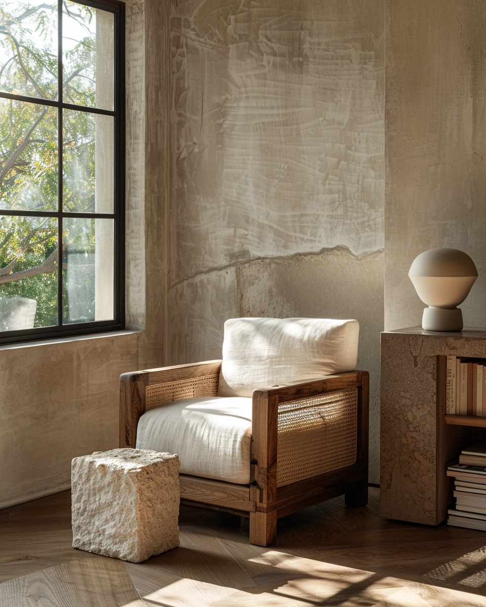

The Corridor
긴 복도는 단순한 동선이 아닙니다.
빛의 농도가 달라지는 여정입니다.

A Private Villa Stay
빛이 머무는 시간의 집
문을 열면, 시간이 느려집니다.
빛은 아치를 따라 흐르고, 그림자는 벽에 기대어 쉽니다.
이곳의 하루는 안뜰에서 시작됩니다.
돌 위로 퍼지는 아침 햇살이 커피잔 위에 내려앉을 때,
비로소 우리는 '머무름'의 의미를 이해하게 됩니다.
건축이 만든 여백 안에서, 바람조차 제 속도를 잊습니다.
긴 복도는 단순한 동선이 아닙니다.
빛의 농도가 달라지는 여정입니다.
창 너머로 들어오는 오후의 빛이
린넨 위에 부드러운 그림자를 수놓습니다.
이 방은 밤을 위해 설계되었습니다.
어둠이 내려앉으면, 벽난로의 온기만이 말을 건넵니다.
물은 하늘을 담고, 하늘은 물에 기댑니다.
이곳의 수영장은 풍경의 일부가 됩니다.
대리석 위로 흐르는 물소리.
이곳에서의 목욕은 하나의 의식입니다.
물의 온도가 바뀌는 순간,
하루의 서사도 조용히 전환됩니다.
What Awaits You
2 Bedrooms · Maximum 4 Guests · 280 m²